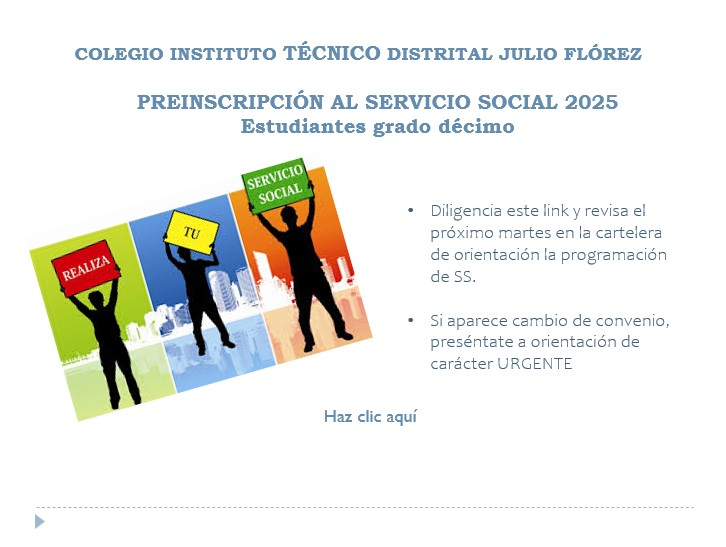

Noticias de esta semana

SERVICIO SOCIAL GRADO DÉCIMO 2025
PREINSCRIPCIÓN AL SERVICIO SOCIAL 2025 Estudiantes grado décimo. Diligencia este link y revisa el próximo martes en la cartelera de orientación la programación de SS.